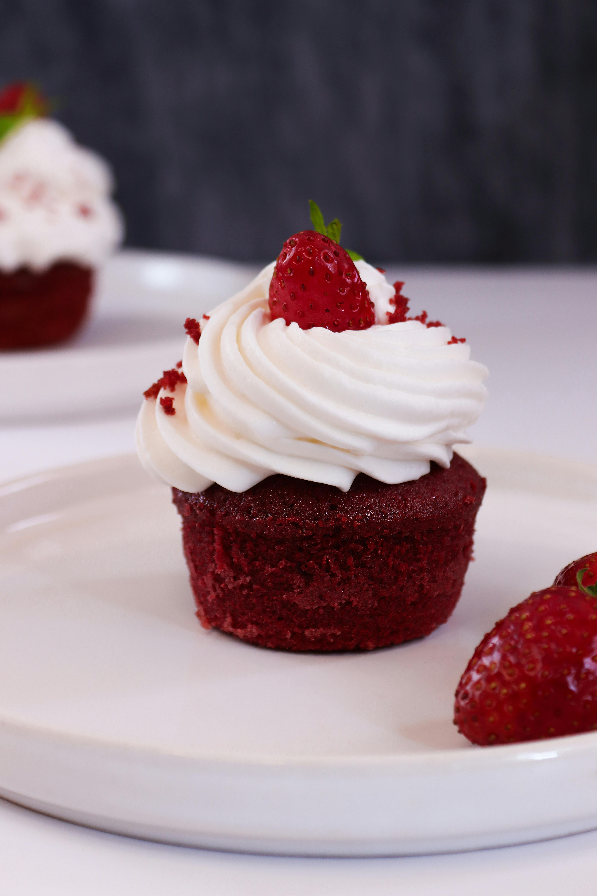

Red Velvet Cupcakes

Description
These red velvet cupcakes are perfectly sweet and wonderfully
moist with a pleasant hint of tanginess.
Ingredients
For the cake:
- 2 ½ coups flour
- ½ cup unsweetened cocoa powder
- 1 teaspoon baking soda
- ½ teaspoon salt
- 2 cups sugar
- 1 cup butter, softened
- 4 large eggs
- 1 cup sour cream
- ½ cup milk
- 1 ounce red food color
- 2 teaspoons vanilla extract
For the frosting:
- 8 ounces cream cheeses, softened
- ¼ cup butter, softened
- 2 teaspoons sour cream
- 2 teaspoons vanilla extract
- 16 ounces sugar
Directions
- Gather all ingredients and preheat the oven to 350 degrees F
(175 degrees C). Line 30 muffin cups with paper liners.
- Make cake: Mix together flour, cocoa powder, baking soda, and
salt in a medium bowl; set aside.
- Beat sugar and butter in a large bowl with an electric mixer
on medium speed until light and fluffy, about 5 minutes.
Beat in eggs, one at a time.
- Mix in sour cream, milk, food color, and vanilla.
- Gradually beat in flour mixture on low speed until just blended;
do not over-beat. Spoon batter into the prepared muffin cups,
filling each ⅔ full.
- Bake in the preheated oven until a toothpick inserted into a cupcake
comes out clean, about 20 minutes. Cool in the pans on a wire rack
for 5 minutes. Remove cupcakes from the pans; cool completely.
- While cupcakes are cooling, make frosting: Beat cream cheese,
butter, sour cream, and vanilla extract in a large bowl until light
and fluffy. Gradually beat in confectioners' sugar until smooth.
- Spread or pipe frosting onto cooled cupcakes.
Home